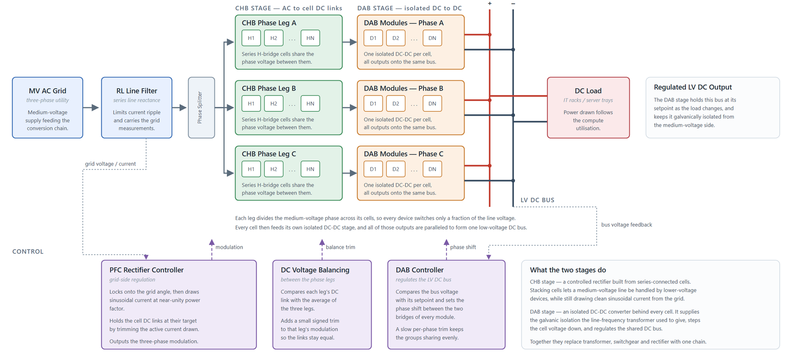

Solid State Transformer (CHB-DAB)
Contents

Composite model of a medium-voltage Solid State Transformer that replaces the line-frequency transformer, the AC switchgear, and the rectifier stage of a conventional datacenter power train with a single power-electronic conversion chain.
Each of the three phases carries one Cascaded H-Bridge phase leg of series-connected cells. Every cell has its own DC link capacitor and its own Dual Active Bridge module, and all of the DAB outputs are paralleled onto the common low-voltage DC bus that feeds the IT racks. Both converter stages use averaged models, so the simulation resolves the control dynamics and the DC link behaviour without resolving switching events.
The block has one three-phase electrical port ABC on the left, two DC electrical ports + and - on the right, and one signal output Out1 that carries the PFC controller flag.
The internal component models are documented separately:
General
- Input Voltage - Phase to Phase RMS (V), inputVoltage, specified as a scalar value. Default is sst.inputVoltage.
- DC Bus Voltage per Module (V), dcBusVoltage, specified as a scalar value. Default is sst.chb.dcBusVoltage.
- DC Output Voltage (V), dcOutputVoltage, specified as a scalar value. Default is sst.dcOutputVoltage.
- Grid Frequency (Hz), frequency, specified as a scalar value. Default is sst.frequency.
- Number of CHB Modules per Phase, numModules, specified as a scalar value. Default is sst.chb.numModules.
- DC Bus Capacitance (F), dcBusCapacitance, specified as a scalar or a three-element vector. Default is sst.chb.dcBusCapacitance.
- Filter Inductance (H), filterInductance, specified as a scalar value. Default is sst.filter.inductance.
- Filter Resistance (Ohm), filterResistance, specified as a scalar value. Default is sst.filter.resistance.
dcBusCapacitance accepts either a scalar, applied to every cell, or a three-element vector [Ca Cb Cc] that sets a different capacitance per phase. A per-phase vector is useful for studying the effect of capacitor tolerance or of a partial capacitor bank failure on the DC voltage balancing loop.
DAB
- Proportional Gain (Kp), Kp_dab, specified as a scalar value. Default is sst.dab.kp.
- Integral Gain (Ki), Ki_dab, specified as a scalar value. Default is sst.dab.ki.
- Phase Shift Upper Limit, dab_sat_upper, specified as a scalar value. Default is sst.dab.upperLimit.
- Phase Shift Lower Limit, dab_sat_lower, specified as a scalar value. Default is sst.dab.lowerLimit.
The phase shift limits bound the PI output. A DAB transfers maximum power at a phase shift ratio of one half, so keeping the limits inside that value holds the converter on the monotonic part of the power transfer characteristic, where the control loop gain does not change sign.
Parameters Not Shown on a Tab
- DAB sample time (s), dab_sampleTime, specified as a scalar value. Default is sst.dab.sampleTime.
- Initial DC bus voltage (V), Vdc_init, specified as a scalar or a three-element vector. Default is sst.chb.Vdc_init.
These two parameters exist in the mask but are not assigned to the General or DAB tab, so they appear outside the tab container in the dialog. Vdc_init accepts a per-phase vector on the same rule as dcBusCapacitance and sets the vc initial-condition target of the DC link capacitors. Those targets are load-bearing: if they are not satisfied, the initial-condition solve falls back to ignoring all variable targets and the CHB DC links start from zero and diverge.
Which Parameters Are Live and Which Are Display Only
The mask initialization code propagates only four of the fourteen mask parameters to the child blocks:
- dcBusCapacitance and Vdc_init are written to the c and vc dialogs of the DC link Capacitor blocks.
- filterInductance and filterResistance are written to the L and R dialogs of Filter & AC measurements/RL filter.
frequency has exactly one consumer, the PLL inside Filter & AC measurements, and that block is commented out, so the parameter currently has no effect.
The remaining nine parameters -- inputVoltage, dcBusVoltage, dcOutputVoltage, numModules, Kp_dab, Ki_dab, dab_sat_upper, dab_sat_lower, and dab_sampleTime -- are display only. The child blocks that need those quantities do not read the mask parameter; they evaluate the corresponding sst.* variable from the base workspace directly, or use a literal:
- PI_central reads sst.dab.kp, sst.dab.ki, sst.dab.upperLimit, sst.dab.lowerLimit, and sst.dab.sampleTime.
- The DAB Generalized Average Model blocks read sst.dab.turnsRatio, sst.dab.primaryLeakageInductance, and the rest of sst.dab.*.
- The CHB Phase Leg blocks use literal values for NumModules, OnResistance, InitialDCVoltage, GridVoltage, and TotalDCVoltage rather than reading the mask or sst.*.
The consequence is that the dialog shows the right number while editing the field changes nothing, because the mask parameter and the child block are both looking at the same base workspace variable. To change any of these nine quantities, edit SSTParam.m and re-run it. The comment at the top of the mask initialization code claims that the DAB PI gains are propagated to all of the DAB controllers, which is behaviour the code does not implement.
Structure
Filter & AC measurements holds the series RL line filter, a three-phase current and voltage sensor, a three-phase power sensor, and the per-unit scaling and low-pass filtering of the measured signals. The PLL in this subsystem is commented out.
Converters holds a Phase Splitter and three identical phase subsystems. Each phase subsystem contains one CHB Phase Leg (Average Model), one DC link Capacitor block with an Electrical Reference per cell, one DAB Generalized Average Model per cell, voltage sensors, and a gain that normalises the DC output voltage for the per-unit DAB control loop. The per-phase DC voltage measurements are averaged to produce the bus average used by both balancing loops.
PFC Rectifier Controller is the grid-side control: a PLL, a DC Voltage Controller that produces the current reference, a dq Current Controller, and a Reset Controller. Its gains come from sst.pfc.* -- kpVoltage, kiVoltage, kpId and kpIq, kiId and kiIq -- and it runs at sst.pfc.sampleTime. Its outputs are the three-phase modulation reference, a measurement bus, and the flag routed to Out1.
DC Voltage Balancing adds a per-phase correction to the modulation reference. For each phase it forms the error between the phase DC voltage and the bus average, multiplies it by sst.chb.Kbal, and then by sign(m) for that phase, so the correction always acts in the direction that charges or discharges the link regardless of the polarity of the modulation. This is the horizontal balancing loop between the three phase legs. There is no vertical balancing between the cells of one leg, because the CHB Phase Leg broadcasts a single scalar modulation index to all of its cells.
DAB Controller regulates the low-voltage DC bus. A single PI_central PI controller compares the per-unit bus voltage against a unity per-unit reference and produces the common phase shift command. DAB Balancing then adds a small per-phase trim: each phase DC voltage error is passed through a zero-order hold at sst.dab.bal_Ts and a first-order discrete low-pass filter whose pole sst.dab.bal_alpha follows from the corner frequency sst.dab.bal_fc, is scaled by sst.dab.Kp_bal, and is saturated to a small symmetric limit. The trim authority is deliberately small and slow so that the balancing loop cannot interact with the central voltage loop.
Two supervisory elements gate the DAB controller. StartupDelay is a step that releases the controller shortly after the start of the simulation, holding the phase shift at zero while the CHB DC links precharge. VacLowRelay is a relay on the measured per-unit AC voltage, with the switch-on threshold set above the switch-off threshold. While the AC voltage is below that band the controller output is switched to zero, which stops power transfer during a deep voltage sag and resets the PI integrator. The hysteresis between the two thresholds prevents chattering at the edge of a ride-through event.